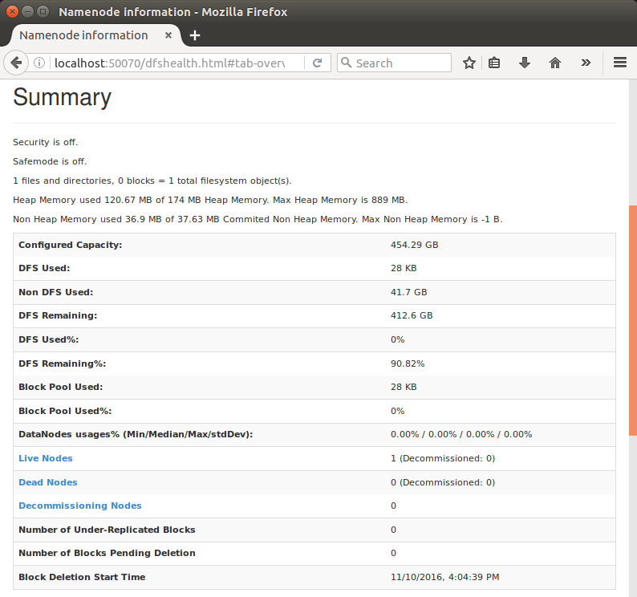
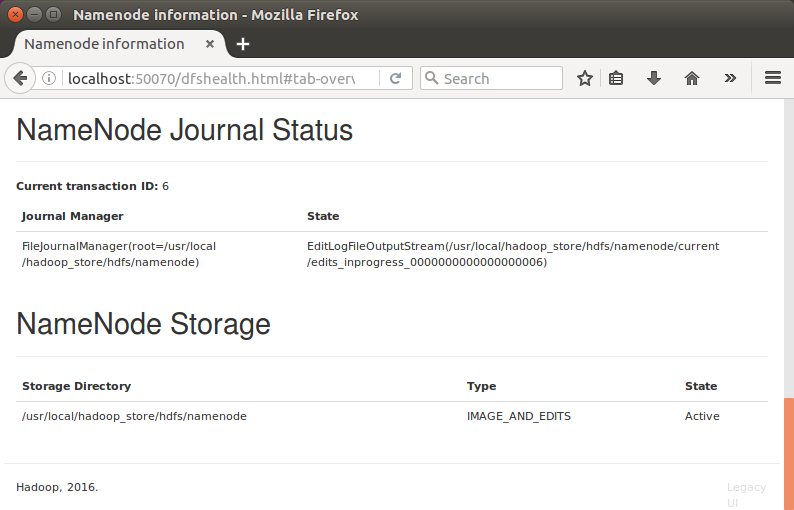
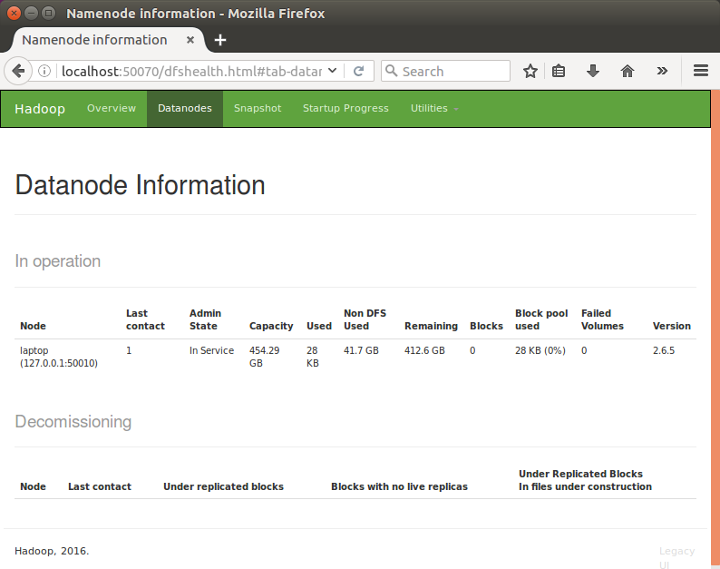
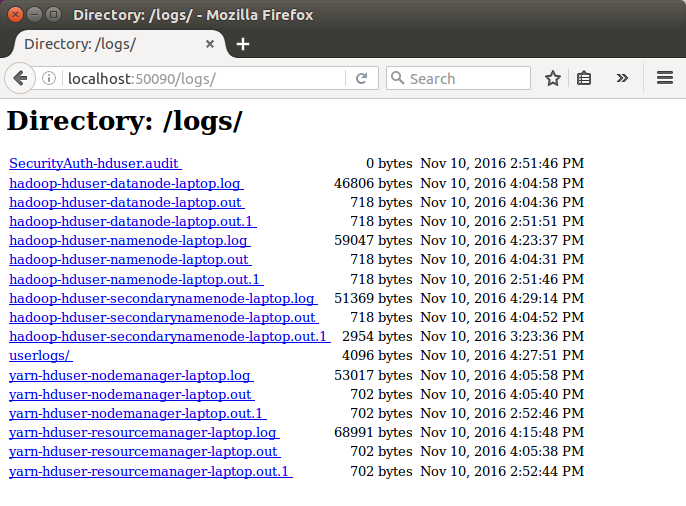
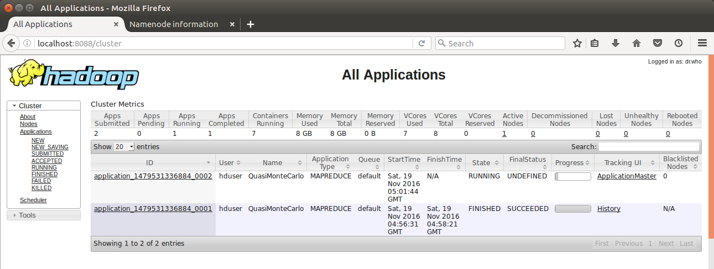

Hadoop 2.6.5 Installing on Ubuntu 16.04 (Single-Node Cluster)
In this chapter, we'll install a single-node Hadoop cluster backed by the Hadoop Distributed File System (HDFS) on Ubuntu 16.04 (Pseudo-distributed mode).
Hadoop framework is written in Java!!
k@laptop:~$ cd ~ # Update the source list k@laptop:~$ sudo apt-get update # The OpenJDK project is the default version of Java # that is provided from a supported Ubuntu repository. k@laptop:~$ sudo apt-get install default-jdk k@laptop:~$ java -version openjdk version "1.8.0_111" OpenJDK Runtime Environment (build 1.8.0_111-8u111-b14-2ubuntu0.16.04.2-b14) OpenJDK 64-Bit Server VM (build 25.111-b14, mixed mode)
k@laptop:~$ $ sudo addgroup hadoop Adding group `hadoop' (GID 1001) ... Done. k@laptop:~$ sudo adduser --ingroup hadoop hduser Adding user `hduser' ... Adding new user `hduser' (1001) with group `hadoop' ... Creating home directory `/home/hduser' ... Copying files from `/etc/skel' ... Enter new UNIX password: Retype new UNIX password: passwd: password updated successfully Changing the user information for hduser Enter the new value, or press ENTER for the default Full Name []: Room Number []: Work Phone []: Home Phone []: Other []: Is the information correct? [Y/n] Y
We can check if we create the hadoop group and hduser user:
$ groups hduser hduser : hadoop
ssh has two main components:
- ssh : The command we use to connect to remote machines - the client.
- sshd : The daemon that is running on the server and allows clients to connect to the server.
The ssh is pre-enabled on Linux, but in order to start sshd daemon, we need to install ssh first. Use this command to do that :
k@laptop:~$ sudo apt-get install ssh
This will install ssh on our machine. If we get something similar to the following, we can think it is setup properly:
k@laptop:~$ which ssh /usr/bin/ssh k@laptop:~$ which sshd /usr/sbin/sshd
Hadoop requires SSH access to manage its nodes, i.e. remote machines plus our local machine. For our single-node setup of Hadoop, we therefore need to configure SSH access to localhost.
So, we need to have SSH up and running on our machine and configured it to allow SSH public key authentication.
Hadoop uses SSH (to access its nodes) which would normally require the user to enter a password. However, this requirement can be eliminated by creating and setting up SSH certificates using the following commands. If asked for a filename just leave it blank and press the enter key to continue.
k@laptop:~$ su hduser Password: Generating public/private rsa key pair. Enter file in which to save the key (/home/hduser/.ssh/id_rsa): Created directory '/home/hduser/.ssh'. Your identification has been saved in /home/hduser/.ssh/id_rsa. Your public key has been saved in /home/hduser/.ssh/id_rsa.pub. The key fingerprint is: SHA256:/M18Dv+ku5js8npZvYi45Fr4F84SzoqXBUO5xAfo+/8 hduser@laptop The key's randomart image is: +---[RSA 2048]----+ | o.o | | . = . | | . o o | | . = | | . S .| | . .+ + o| | ..=o* * .oo| | .+== *.B++ | | ..o+==EB*B+.| +----[SHA256]-----+ hduser@laptop:/home/k$ cat $HOME/.ssh/id_rsa.pub >> $HOME/.ssh/authorized_keys
The second command adds the newly created key to the list of authorized keys so that Hadoop can use ssh without prompting for a password.
We can check if ssh works:
hduser@laptop:/home/k$ ssh localhost The authenticity of host 'localhost (127.0.0.1)' can't be established. ECDSA key fingerprint is SHA256:e8SM2INFNu8NhXKzdX9bOyKIKbMoUSK4dXKonloN8JY. Are you sure you want to continue connecting (yes/no)? yes Warning: Permanently added 'localhost' (ECDSA) to the list of known hosts. Welcome to Ubuntu 16.04.1 LTS (GNU/Linux 4.4.0-47-generic x86_64) ...
hduser@laptop:~$ wget http://mirrors.sonic.net/apache/hadoop/common/hadoop-2.6.5/hadoop-2.6.5.tar.gz hduser@laptop:~$ tar xvzf hadoop-2.6.5.tar.gz
We want to move the Hadoop installation to the /usr/local/hadoop directory. So, we should create the directory first:
hduser@laptop:~$ sudo mkdir -p /usr/local/hadoop [sudo] password for hduser: hduser is not in the sudoers file. This incident will be reported.
We can check again if hduser is not in sudo group:
hduser@laptop:~$ sudo -v Sorry, user hduser may not run sudo on laptop.
This can be resolved by logging in as a root user, and then add hduser to sudo group:
hduser@laptop:~/hadoop-2.6.5$ su k Password: k@laptop:/home/hduser$ sudo adduser hduser sudo [sudo] password for k: Adding user `hduser' to group `sudo' ... Adding user hduser to group sudo Done.
Now, the hduser has root priviledge, we can move the Hadoop installation to the /usr/local/hadoop directory without any problem:
k@laptop:/home/hduser$ sudo su hduser hduser@laptop:~/hadoop-2.6.5$ sudo mv * /usr/local/hadoop hduser@laptop:~/hadoop-2.6.5$ sudo chown -R hduser:hadoop /usr/local/hadoop
The following files should to be modified to complete the Hadoop setup:
- ~/.bashrc
- /usr/local/hadoop/etc/hadoop/hadoop-env.sh
- /usr/local/hadoop/etc/hadoop/core-site.xml
- /usr/local/hadoop/etc/hadoop/mapred-site.xml.template
- /usr/local/hadoop/etc/hadoop/hdfs-site.xml
1. ~/.bashrc:
Before editing the .bashrc file in hduser's home directory, we need to find the path where Java has been installed to set the JAVA_HOME environment variable using the following command:
hduser@laptop update-alternatives --config java There is only one alternative in link group java (providing /usr/bin/java): /usr/lib/jvm/java-8-openjdk-amd64/jre/bin/java Nothing to configure.
Now we can append the following to the end of ~/.bashrc:
hduser@laptop:~$ vi ~/.bashrc #HADOOP VARIABLES START export JAVA_HOME=/usr/lib/jvm/java-8-openjdk-amd64 export HADOOP_INSTALL=/usr/local/hadoop export PATH=$PATH:$HADOOP_INSTALL/bin export PATH=$PATH:$HADOOP_INSTALL/sbin export HADOOP_MAPRED_HOME=$HADOOP_INSTALL export HADOOP_COMMON_HOME=$HADOOP_INSTALL export HADOOP_HDFS_HOME=$HADOOP_INSTALL export YARN_HOME=$HADOOP_INSTALL export HADOOP_COMMON_LIB_NATIVE_DIR=$HADOOP_INSTALL/lib/native export HADOOP_OPTS="-Djava.library.path=$HADOOP_INSTALL/lib" #HADOOP VARIABLES END hduser@laptop:~$ source ~/.bashrc
Note that the JAVA_HOME should be set as the path just before the '.../bin/':
hduser@ubuntu-VirtualBox:~$ javac -version javac 1.8.0_111 hduser@ubuntu-VirtualBox:~$ which javac /usr/bin/javac hduser@ubuntu-VirtualBox:~$ readlink -f /usr/bin/javac /usr/lib/jvm/java-8-openjdk-amd64/bin/javac
2. /usr/local/hadoop/etc/hadoop/hadoop-env.sh
We need to set JAVA_HOME by modifying hadoop-env.sh file.
hduser@laptop:~$ vi /usr/local/hadoop/etc/hadoop/hadoop-env.sh export JAVA_HOME=/usr/lib/jvm/java-8-openjdk-amd64
Adding the above statement in the hadoop-env.sh file ensures that the value of JAVA_HOME variable will be available to Hadoop whenever it is started up.
3. /usr/local/hadoop/etc/hadoop/core-site.xml:
The /usr/local/hadoop/etc/hadoop/core-site.xml file contains configuration properties that Hadoop uses when starting up.
This file can be used to override the default settings that Hadoop starts with.
hduser@laptop:~$ sudo mkdir -p /app/hadoop/tmp hduser@laptop:~$ sudo chown hduser:hadoop /app/hadoop/tmp
Open the file and enter the following in between the <configuration></configuration> tag:
hduser@laptop:~$ vi /usr/local/hadoop/etc/hadoop/core-site.xml <configuration> <property> <name>hadoop.tmp.dir</name> <value>/app/hadoop/tmp</value> <description>A base for other temporary directories.</description> </property> <property> <name>fs.default.name</name> <value>hdfs://localhost:54310</value> <description>The name of the default file system. A URI whose scheme and authority determine the FileSystem implementation. The uri's scheme determines the config property (fs.SCHEME.impl) naming the FileSystem implementation class. The uri's authority is used to determine the host, port, etc. for a filesystem.</description> </property> </configuration>
4. /usr/local/hadoop/etc/hadoop/mapred-site.xml
By default, the /usr/local/hadoop/etc/hadoop/ folder contains
/usr/local/hadoop/etc/hadoop/mapred-site.xml.template
file which has to be renamed/copied with the name mapred-site.xml:
hduser@laptop:~$ cp /usr/local/hadoop/etc/hadoop/mapred-site.xml.template /usr/local/hadoop/etc/hadoop/mapred-site.xml
The /usr/local/hadoop/etc/hadoop/mapred-site.xml file is used to specify which framework is being used for MapReduce.
We need to
enter the following content in between the <configuration></configuration> tag:
<configuration> <property> <name>mapred.job.tracker</name> <value>localhost:54311</value> <description>The host and port that the MapReduce job tracker runs at. If "local", then jobs are run in-process as a single map and reduce task. </description> </property> </configuration>
5. /usr/local/hadoop/etc/hadoop/hdfs-site.xml
The /usr/local/hadoop/etc/hadoop/hdfs-site.xml file needs to be configured for each host in the cluster that is being used.
It specifies the directories which will be used as the namenode and the datanode on that host.
Before editing this file, we need to create two directories which will contain the namenode and the datanode for this Hadoop installation.
This can be done using the following commands:
hduser@laptop:~$ sudo mkdir -p /usr/local/hadoop_store/hdfs/namenode hduser@laptop:~$ sudo mkdir -p /usr/local/hadoop_store/hdfs/datanode hduser@laptop:~$ sudo chown -R hduser:hadoop /usr/local/hadoop_store
Open the file and enter the following content in between the <configuration></configuration> tag:
hduser@laptop:~$ vi /usr/local/hadoop/etc/hadoop/hdfs-site.xml <configuration> <property> <name>dfs.replication</name> <value>1</value> <description>Default block replication. The actual number of replications can be specified when the file is created. The default is used if replication is not specified in create time. </description> </property> <property> <name>dfs.namenode.name.dir</name> <value>file:/usr/local/hadoop_store/hdfs/namenode</value> </property> <property> <name>dfs.datanode.data.dir</name> <value>file:/usr/local/hadoop_store/hdfs/datanode</value> </property> </configuration>
Now, the Hadoop file system needs to be formatted so that we can start to use it. The format command should be issued with write permission since it creates current directory
under /usr/local/hadoop_store/hdfs/namenode folder:
hduser@laptop:~$ hadoop namenode -format DEPRECATED: Use of this script to execute hdfs command is deprecated. Instead use the hdfs command for it. 16/11/10 13:07:15 INFO namenode.NameNode: STARTUP_MSG: /************************************************************ STARTUP_MSG: Starting NameNode STARTUP_MSG: host = laptop/127.0.1.1 STARTUP_MSG: args = [-format] STARTUP_MSG: version = 2.6.5 ... ... ... 16/11/10 13:07:23 INFO util.ExitUtil: Exiting with status 0 16/11/10 13:07:23 INFO namenode.NameNode: SHUTDOWN_MSG: /************************************************************ SHUTDOWN_MSG: Shutting down NameNode at laptop/127.0.1.1 ************************************************************/
Note that hadoop namenode -format command should be executed once before we start using Hadoop.
If this command is executed again after Hadoop has been used, it'll destroy all the data on the Hadoop file system.
Now it's time to start the newly installed single node cluster.
We can use start-all.sh or (start-dfs.sh and start-yarn.sh)
k@laptop:~$ cd /usr/local/hadoop/sbin k@laptop:/usr/local/hadoop/sbin$ ls distribute-exclude.sh start-all.cmd stop-balancer.sh hadoop-daemon.sh start-all.sh stop-dfs.cmd hadoop-daemons.sh start-balancer.sh stop-dfs.sh hdfs-config.cmd start-dfs.cmd stop-secure-dns.sh hdfs-config.sh start-dfs.sh stop-yarn.cmd httpfs.sh start-secure-dns.sh stop-yarn.sh kms.sh start-yarn.cmd yarn-daemon.sh mr-jobhistory-daemon.sh start-yarn.sh yarn-daemons.sh refresh-namenodes.sh stop-all.cmd slaves.sh stop-all.sh k@laptop:/usr/local/hadoop/sbin$ sudo su hduser
Start NameNode daemon and DataNode daemon:
hduser@laptop:/usr/local/hadoop/sbin$ start-dfs.sh 16/11/10 14:51:44 WARN util.NativeCodeLoader: Unable to load native-hadoop library for your platform... using builtin-java classes where applicable Starting namenodes on [localhost] localhost: starting namenode, logging to /usr/local/hadoop/logs/hadoop-hduser-namenode-laptop.out localhost: starting datanode, logging to /usr/local/hadoop/logs/hadoop-hduser-datanode-laptop.out Starting secondary namenodes [0.0.0.0] The authenticity of host '0.0.0.0 (0.0.0.0)' can't be established. ECDSA key fingerprint is SHA256:e9SM2INFNu8NhXKzdX9bOyKIKbMoUSK4dXKonloN7JY. Are you sure you want to continue connecting (yes/no)? yes 0.0.0.0: Warning: Permanently added '0.0.0.0' (ECDSA) to the list of known hosts. 0.0.0.0: starting secondarynamenode, logging to /usr/local/hadoop/logs/hadoop-hduser-secondarynamenode-laptop.out 16/11/10 14:52:24 WARN util.NativeCodeLoader: Unable to load native-hadoop library for your platform... using builtin-java classes where applicable
Browse the web interface for the NameNode; by default it is available at:
NameNode - http://localhost:50070/
Start ResourceManager daemon and NodeManager daemon:
hduser@laptop:/usr/local/hadoop/sbin$ start-yarn.sh starting yarn daemons starting resourcemanager, logging to /usr/local/hadoop/logs/yarn-hduser-resourcemanager-laptop.out localhost: starting nodemanager, logging to /usr/local/hadoop/logs/yarn-hduser-nodemanager-laptop.out
(Note) We got warning "Unable to load native-hadoop library for your platform..." which is related to 32/64-bit, but we don't have to worry about it. Still want to remove it? Then, compile 64-bit source code!
We can check if it's really up and running:
hduser@laptop:/usr/local/hadoop/sbin$ jps 14306 DataNode 14660 ResourceManager 14505 SecondaryNameNode 14205 NameNode 14765 NodeManager 15166 Jps
The output means that we now have a functional instance of Hadoop running on our VPS (Virtual private server).
Another way to check is using netstat:
hduser@laptop:/usr/local/hadoop/sbin$ netstat -plten | grep java (Not all processes could be identified, non-owned process info will not be shown, you would have to be root to see it all.) tcp 0 0 127.0.0.1:54310 0.0.0.0:* LISTEN 1001 682747 14205/java tcp 0 0 0.0.0.0:50090 0.0.0.0:* LISTEN 1001 684425 14505/java tcp 0 0 0.0.0.0:50070 0.0.0.0:* LISTEN 1001 681708 14205/java tcp 0 0 0.0.0.0:50010 0.0.0.0:* LISTEN 1001 682751 14306/java tcp 0 0 0.0.0.0:50075 0.0.0.0:* LISTEN 1001 682989 14306/java tcp 0 0 0.0.0.0:50020 0.0.0.0:* LISTEN 1001 681774 14306/java tcp6 0 0 :::8040 :::* LISTEN 1001 686741 14765/java tcp6 0 0 :::8042 :::* LISTEN 1001 687454 14765/java tcp6 0 0 :::35094 :::* LISTEN 1001 687439 14765/java tcp6 0 0 :::8088 :::* LISTEN 1001 687453 14660/java tcp6 0 0 :::8030 :::* LISTEN 1001 684963 14660/java tcp6 0 0 :::8031 :::* LISTEN 1001 684959 14660/java tcp6 0 0 :::8032 :::* LISTEN 1001 687435 14660/java tcp6 0 0 :::8033 :::* LISTEN 1001 687460 14660/java hduser@laptop:/usr/local/hadoop/sbin$
In order to stop all the daemons running on our machine, we can run stop-all.sh or (stop-dfs.sh and stop-yarn.sh) :
k@laptop:/usr/local/hadoop/sbin$ ls distribute-exclude.sh start-all.cmd stop-balancer.sh hadoop-daemon.sh start-all.sh stop-dfs.cmd hadoop-daemons.sh start-balancer.sh stop-dfs.sh hdfs-config.cmd start-dfs.cmd stop-secure-dns.sh hdfs-config.sh start-dfs.sh stop-yarn.cmd httpfs.sh start-secure-dns.sh stop-yarn.sh kms.sh start-yarn.cmd yarn-daemon.sh mr-jobhistory-daemon.sh start-yarn.sh yarn-daemons.sh refresh-namenodes.sh stop-all.cmd slaves.sh stop-all.sh hduser@laptop:/usr/local/hadoop/sbin$ stop-dfs.sh 16/11/10 15:23:20 WARN util.NativeCodeLoader: Unable to load native-hadoop library for your platform... using builtin-java classes where applicable Stopping namenodes on [localhost] localhost: stopping namenode localhost: stopping datanode Stopping secondary namenodes [0.0.0.0] 0.0.0.0: stopping secondarynamenode 16/11/10 15:23:52 WARN util.NativeCodeLoader: Unable to load native-hadoop library for your platform... using builtin-java classes where applicable hduser@laptop:/usr/local/hadoop/sbin$ stop-yarn.sh stopping yarn daemons stopping resourcemanager localhost: stopping nodemanager no proxyserver to stop
Let's start the Hadoop again and see its Web UI:
hduser@laptop:/usr/local/hadoop/sbin$ start-dfs.sh hduser@laptop:/usr/local/hadoop/sbin$ start-yarn.sh
Type http://localhost:50070/ into our browser, then we'll see the web UI of the NameNode daemon:



DataNode
Type in http://localhost:50090/status.jsp as url, we get SecondaryNameNode:


The default port number to access all the applications of cluster is 8088. Use the following url to visit Resource Manager:
http://localhost:8088/
We may need the following configurations set properly.
/usr/local/hadoop/etc/hadoop/yarn-site.xml:
<configuration>
<property>
<name>yarn.nodemanager.aux-services</name>
<value>mapreduce_shuffle</value>
</property>
</configuration>
/usr/local/hadoop/etc/hadoop/mapred-site.xml:
<configuration> <property> <name>mapred.job.tracker</name> <value>localhost:54311</value> </property> <property> <name>mapreduce.framework.name</name> <value>yarn</value> </property> </configuration>

Note that we see two MapReduce apps: one finished and the other still in progress.
Bogotobogo's contents
To see more items, click left or right arrow.


If we have an application that is set up to use Hadoop, we can fire that up and start using it with our Hadoop installation!
Big Data & Hadoop Tutorials
Hadoop 2.6 - Installing on Ubuntu 14.04 (Single-Node Cluster)
Hadoop 2.6.5 - Installing on Ubuntu 16.04 (Single-Node Cluster)
Hadoop - Running MapReduce Job
Hadoop - Ecosystem
CDH5.3 Install on four EC2 instances (1 Name node and 3 Datanodes) using Cloudera Manager 5
CDH5 APIs
QuickStart VMs for CDH 5.3
QuickStart VMs for CDH 5.3 II - Testing with wordcount
QuickStart VMs for CDH 5.3 II - Hive DB query
Scheduled start and stop CDH services
CDH 5.8 Install with QuickStarts Docker
Zookeeper & Kafka Install
Zookeeper & Kafka - single node single broker
Zookeeper & Kafka - Single node and multiple brokers
OLTP vs OLAP
Apache Hadoop Tutorial I with CDH - Overview
Apache Hadoop Tutorial II with CDH - MapReduce Word Count
Apache Hadoop Tutorial III with CDH - MapReduce Word Count 2
Apache Hadoop (CDH 5) Hive Introduction
CDH5 - Hive Upgrade to 1.3 to from 1.2
Apache Hive 2.1.0 install on Ubuntu 16.04
Apache Hadoop : HBase in Pseudo-Distributed mode
Apache Hadoop : Creating HBase table with HBase shell and HUE
Apache Hadoop : Hue 3.11 install on Ubuntu 16.04
Apache Hadoop : Creating HBase table with Java API
Apache HBase : Map, Persistent, Sparse, Sorted, Distributed and Multidimensional
Apache Hadoop - Flume with CDH5: a single-node Flume deployment (telnet example)
Apache Hadoop (CDH 5) Flume with VirtualBox : syslog example via NettyAvroRpcClient
List of Apache Hadoop hdfs commands
Apache Hadoop : Creating Wordcount Java Project with Eclipse Part 1
Apache Hadoop : Creating Wordcount Java Project with Eclipse Part 2
Apache Hadoop : Creating Card Java Project with Eclipse using Cloudera VM UnoExample for CDH5 - local run
Apache Hadoop : Creating Wordcount Maven Project with Eclipse
Wordcount MapReduce with Oozie workflow with Hue browser - CDH 5.3 Hadoop cluster using VirtualBox and QuickStart VM
Spark 1.2 using VirtualBox and QuickStart VM - wordcount
Spark Programming Model : Resilient Distributed Dataset (RDD) with CDH
Apache Spark 1.2 with PySpark (Spark Python API) Wordcount using CDH5
Apache Spark 1.2 Streaming
Apache Spark 2.0.2 with PySpark (Spark Python API) Shell
Apache Spark 2.0.2 tutorial with PySpark : RDD
Apache Spark 2.0.0 tutorial with PySpark : Analyzing Neuroimaging Data with Thunder
Apache Spark Streaming with Kafka and Cassandra
Apache Drill with ZooKeeper - Install on Ubuntu 16.04
Apache Drill - Query File System, JSON, and Parquet
Apache Drill - HBase query
Apache Drill - Hive query
Apache Drill - MongoDB query
Ph.D. / Golden Gate Ave, San Francisco / Seoul National Univ / Carnegie Mellon / UC Berkeley / DevOps / Deep Learning / Visualization